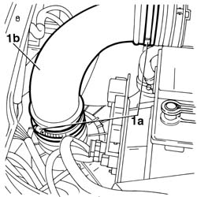

1048A40 sleeve from air cleaner to flow meter - r + r
- Path
- Procedures > 10 ENGINE > 1048 ENGINE AIR SUPPLY CIRCUIT > 1048A vacuum air circuit > 1048A40 sleeve from air cleaner to flow meter - r + r
- Kind
- repair procedure (removal / refitting; the operation number is the code)
- Applies to
- engines: 1.6 TS , 1.8 TS, 1.9 JTD 8v , 2.4 JTD 10v; all production periods
- Interactive page
- https://sloeber94.github.io/elrnDB-a156/en/#/3237679
Applies to: engines: 1.6 TS , 1.8 TS; all production periods
 Removing
Removing
 Refitting
Refitting1. Loosen the two fastening straps (1a) and take out the sleeve (1b).

Applies to: engines: 1.6 TS , 1.8 TS; all production periods
Refitting
RemovingFit the sleeve in its seats and tighten the fastening straps.
Applies to: engines: 1.9 JTD 8v , 2.4 JTD 10v; all production periods
Removing
Refitting1048A50 air inlet pipe to turbo charger - r + r
1048A42 sleeve from flow meter to turbo charger air inlet pipe - r + r
Applies to: engines: 1.9 JTD 8v , 2.4 JTD 10v; all production periods
Refitting
Removing1048A42 sleeve from flow meter to turbo charger air inlet pipe - r + r
Topics linked from this page (2)
- 1048A42 sleeve from flow meter to turbo charger air inlet pipe - r + r
- 1048A50 air inlet pipe to turbo charger - r + r